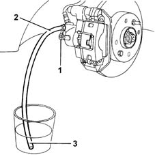
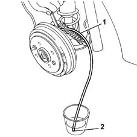

3330A14 HYDRAULIC BRAKING SYSTEM - Bleed air
- Path
- Procedures > 33 BRAKING SYSTEM > 3330 HYDRAULIC BRAKING SYSTEM > 3330A hydraulic brake system tests and checks > 3330A14 HYDRAULIC BRAKING SYSTEM - Bleed air
- Kind
- repair procedure (removal / refitting; the operation number is the code)
- Applies to
- all engines; all production periods
- Interactive page
- https://sloeber94.github.io/elrnDB-fMltpl/en/#/2891602
Applies to: all engines; all production periods
Place the car on a lift.
3330A10 BRAKE FLUID - Check level and top up, if necessary.
Carry out op. 4450B12 front or rear wheels (two) - r+r
Carry out op. 4450B13 rear wheels(2) r r
Fill the brake fluid reservoir to the maximum level and tighten the cap.
1. Remove the protective cover for the bleed screw for one of the brake brake calipers.
2. Fit a transparent plastic pipe on the bleed screw.
3. Inser the other end of the pipe in a container of brake fluid.

Applies to: all engines; all production periods
Press and release the brake pedal several times very quickly and then keep it fully depressed.
Undo the bleed screw by 1/4 of a turn.
When the brake pedal reaches the end of travel position, tighten the bleed screw.
Press the brake pedal repeatedly and then keep it fully depressed.
Undo the bleed screw again by 1/4 of a turn.
Repeat the operation until the fluid flowing into the container is completely free of air.
Tighten the bleed screw.
Remove the pipe from the bleed screw.
Fit the protective cap on the bleed screw.
Repeat the operation for the other front brake caliper.
Bleed the air from the rear drum brakes.
Remove the protective cap from the bleed screw for one of the rear drum brake cylinders.
1. Fit a transparent plastic pipe on the bleed screw.
2. Insert the other end of the pipe into a container of brake fluid.

Applies to: all engines; all production periods
Press and release the brake pedal several times very quickly and then keep it fully depressed.
Undo the bleed screw by 1/4 of a turn.
When the brake pedal reaches the end of travel position, tighten the bleed screw.
Press the brake pedal repeatedly and then keep it fully depressed.
Undo the bleed screw again by 1/4 of a turn.
Repeat the operation until the fluid flowing into the container is completely free of air.
Tighten the bleed screw.
Remove the pipe from the bleed screw.
Fit the protective cap on the bleed screw.
Repeat the operation for the other rear drum brake.
Topics linked from this page (3)
- 3330A10 BRAKE FLUID - Check level and top up, if necessary.
- 4450B12 front or rear wheels (two) - r+r
- 4450B13 rear wheels(2) r r
Topics that link to this page (12)
- 1280B21 (Pump) - MASTER CYLINER R.R. for right hand drive versions
- 1280B35 FLEXIBLE PIPE between intermediate rigid pipe and (pump) - master cylinder R.R. for right hand drive versions
- 3310A30 FRONT BRAKE CALIPER (one) - R.R.
- 3330A18 front or rear hydraulic brake system - bleed
- 3330A20 HYDRAULIC BRAKING SYSTEM - Change. fluid - Includes. washing pipes and bleeding air
- 3330C12 (PUMP) - MASTER CYLINDER R.R. for right hand drive versions
- 3330C37 pipe from brake fluid reservoir to master cylinder (pump) - r r for rhd versions
- 3330C38 FLEXIBLE PIPE - FRONT section - from brake fluid RESERVOIR to (pump) - MASTER CYLINDER R.R. for right hand drive versions
- 3330C39 FLEXIBLE PIPE - REAR section - from brake fluid RESERVOIR to (pump) - MASTER CYLINDER R.R. on right hand drive versions
- 3330D18 brake servo r r for right hand drrive versions
- 3340A12 A'B.S. system. - electronic and hydraulic CONTROL UNIT R.R.
- 3340A13 abs central mount - r r